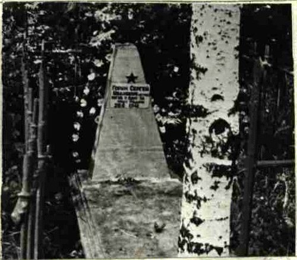
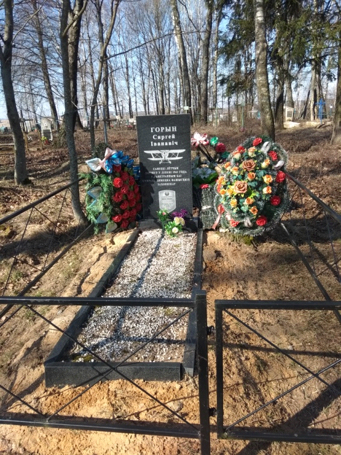

Памятник летчику Горину Сергею Ивановичу, погибшему в 1941 году (гражданское кладбище возле д.Караси)

Горин Сергей Иванович родился в 1919 году. Воин Красной Армии, лётчик, погиб в воздушном бою против немецко – фашистских захватчиков в июне 1944 года, когда ему было двадцать лет.
Стоял солнечный июньский день. С утра прошёл непродолжительный дождь, и небо было чистое и безоблачное.
Природа ожила после продолжительного зноя. Дети , резвясь, высыпали на улицу. Где – то далеко шла война. Неожиданно в небе появились самолёты. Среди них были вражеские, с немецкими крестами. Над деревней Караси шёл воздушный бой. Вдруг один из самолётов стал стремительно падать. Это был наш самолёт. Он был явно подбит. Чёрный дым валил из хвоста самолёта. Но лётчик старался отвести беду от людей. Он не выпрыгивал из горящей машины, а всё дальше и дальше уводил её в поле. К этому времени из домов выбежали все жители деревни. С ужасом люди наблюдали за происходящим.

Самолёт упал в чистом поле. Туда сбежалась толпа людей. Несколько мужчин бережно достали обгоревшего лётчика из дымившегося самолёта. Никто не проронил ни слова. Сокрушаясь о случившемся, медленно разошлись по домам.. На следующий день жители деревни собрались для того, чтобы отдать последние почести молоденькому пареньку, оказавшемуся волей судьбы в их местности. Похоронить солдата решили на кладбище в деревне Караси.
В 1958 году на могиле воина поставлен обелиск. В 2015 году на могиле лётчика был установлен памятник.